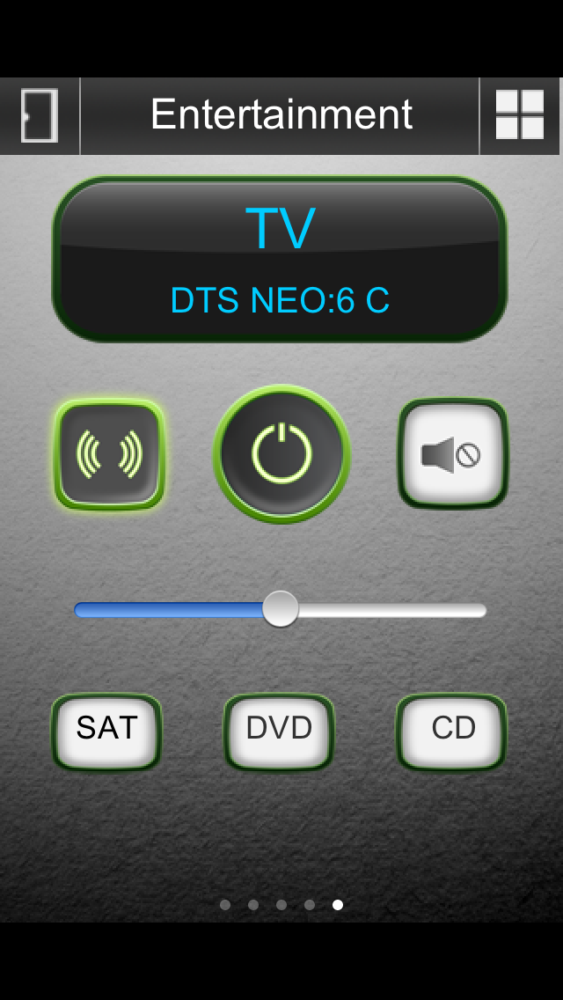

Hi.
I have noticed with the DenonAVRSerial protocol that if you have a repeating button (like a volume control), the repeat is happening too fast for the controller as it hasn't released the serial port lock from the previous command. I receive lots of:
RXTX fhs_lock() Error: creating lock file: /var/lock/LCK..ttyUSB0: File exists
Error sending serial command Port: /dev/ttyUSB0 gnu.io.NoSuchPortException
I don't know if this is just because the Raspberry Pi is a bit slow to release the lock or if it happens on other platforms as well but it is a bit of a pain! Any ideas if it is possible to implement some sort of message queueing or (not as elegant) slow down the repeat?
Thanks
Phil
{kind=link}
|
Supposedly there are issues with RXTX |
|
Yes it works perfectly if I press the button every 1-2 seconds but as the range is -80 to 0 dB in 0.5dB steps it takes a while I am thinking of trying the built-in serial port on the Raspberry Pi, it should be possible to use pi4j instead of RXTX I would have thought. http://pi4j.com/example/serial.html Phil |
|
I did not know pi4j but this looks really cool |
|
Yes I think my first protocol for OR will probably be something that interfaces directly with pi4j to control the GPIO lines etc. Phil |
|
There is a also commands in the Denon serial protocol for setting the amplification directly in decibel. I found that in practice decibel buttions for -20, -30, -40 and -50 dB is much more convenient then trying to pan up and down with the Volume up and Volume down commands. In my case I find the reaction to the latter commands is very slow at the beginning and then at some point they accellerate to change the volume at a furious pace. I was always attributing this behaviour to the receiver but admittedly I never experimented much. Sorry if I did not directly answer your question. |
|
Btw. The coolest solution is probably to enhance the Denon Command implementation so that you can read out the current volume value. If you create a sensor for the volume and a command component for the set volume command you can combine them into a UI slider component to set the volume. Absolutely awesome. |
|
I was thinking the same thing and I will probably try that. Phil |
|
I have made extensive changes to the protocol which is working well at my end: 1. A static class to manage the connection to the serial port which fixes the locking issue. I AM NOT A JAVA PROGRAMMER so I can't attest to the quality of the programming. I have also not done anything with the UDP side of it as my controller is connected directly to my receiver although that should still work (without any of the additions above). Switches are working and showing the correct states as are sliders. One quite nice benefit is that by using labels attached to sensors, you can replicate key parts of the receiver display as well! Here is a test panel that I have created/modified and all parts of it are working fine. If anybody wants the changes, please let me know.  |